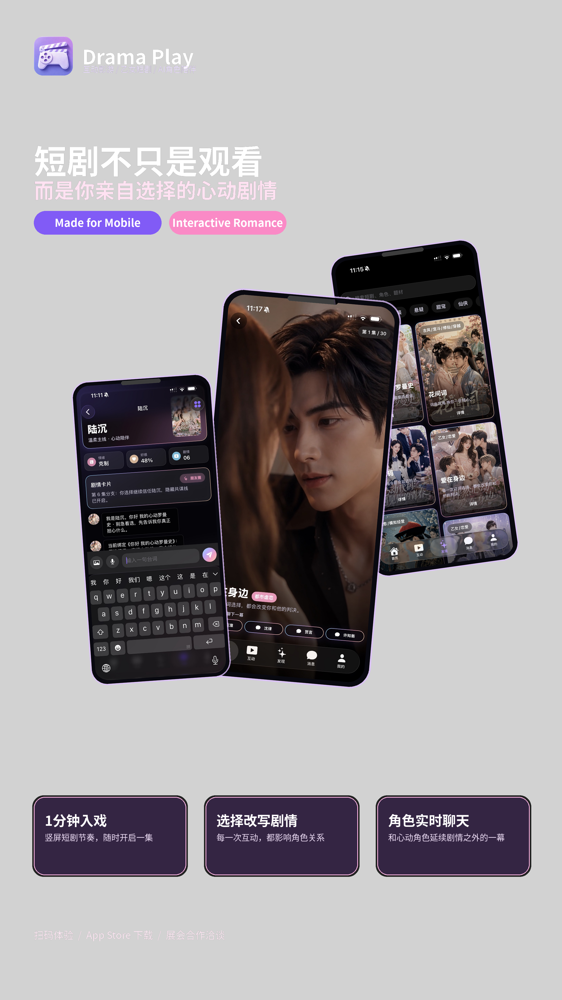
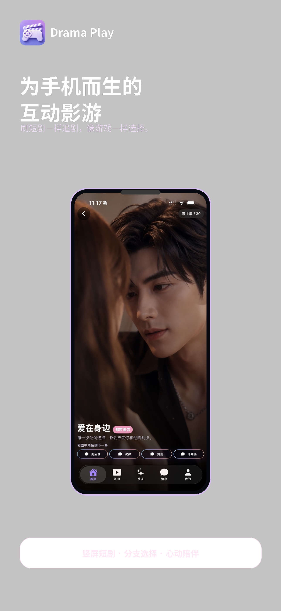
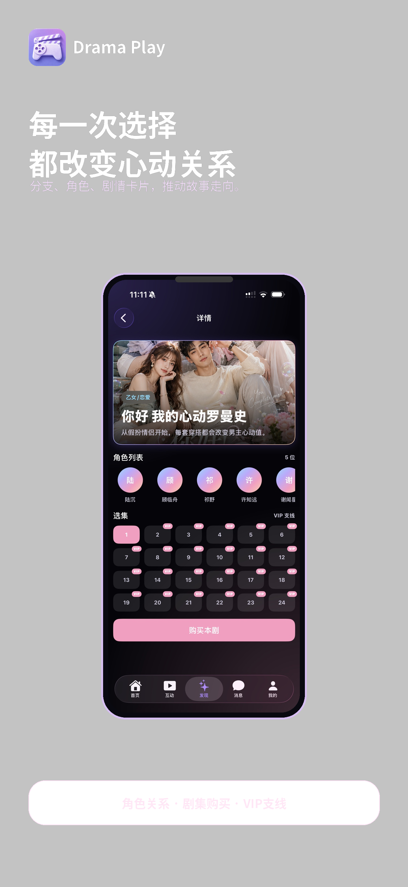
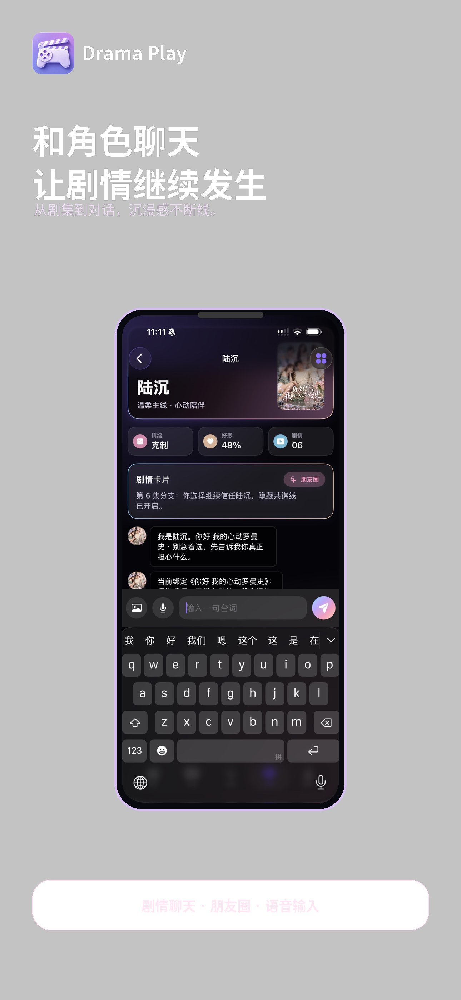

互动短剧播放
竖屏剧情、热点选择、分支节点和连续剧集，一套体验承接玩家决策。
互动短剧 / AI 创作 / 分支剧情
面向移动端互动影游与短剧团队：用 DramaEditor 搭建世界、视频节点和互动分支，再交给玩家亲自推进剧情。

竖屏剧情、热点选择、分支节点和连续剧集，一套体验承接玩家决策。
从世界观、角色、地点到视频节点和互动配置，直接生成可测试的 App 数据。
为短剧团队保留脚本拆分、镜头提示、首帧参考和批量视频制作流程。


